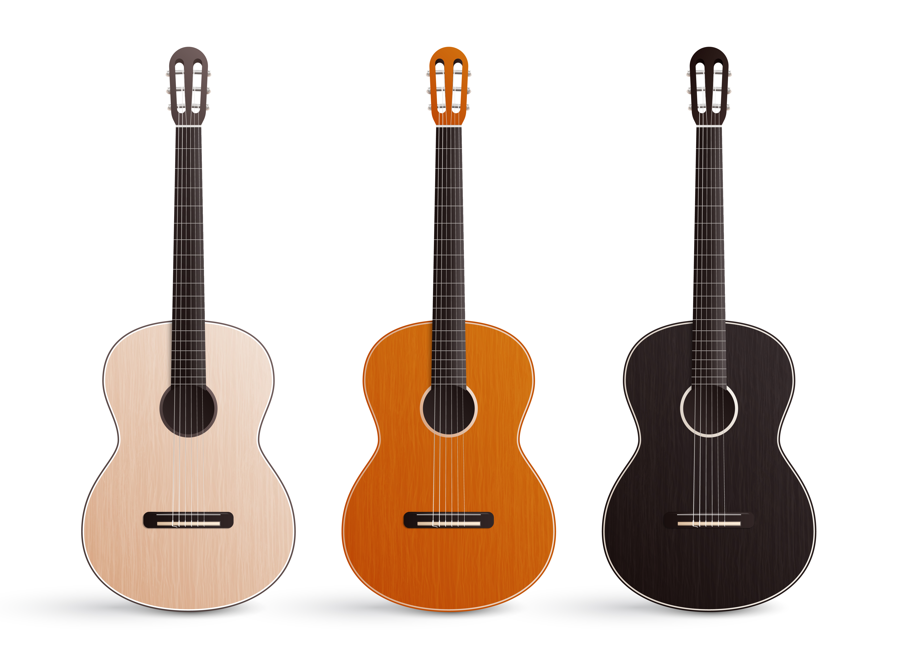
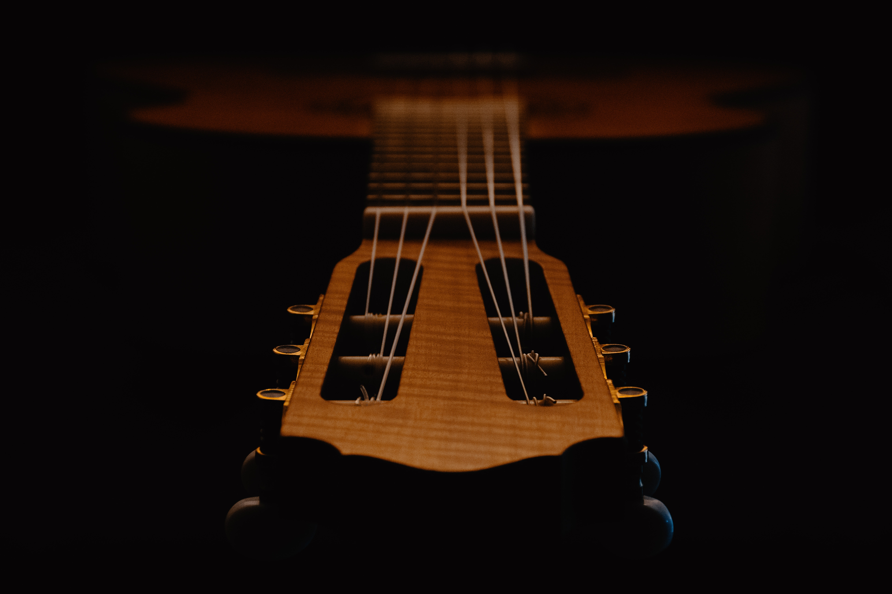
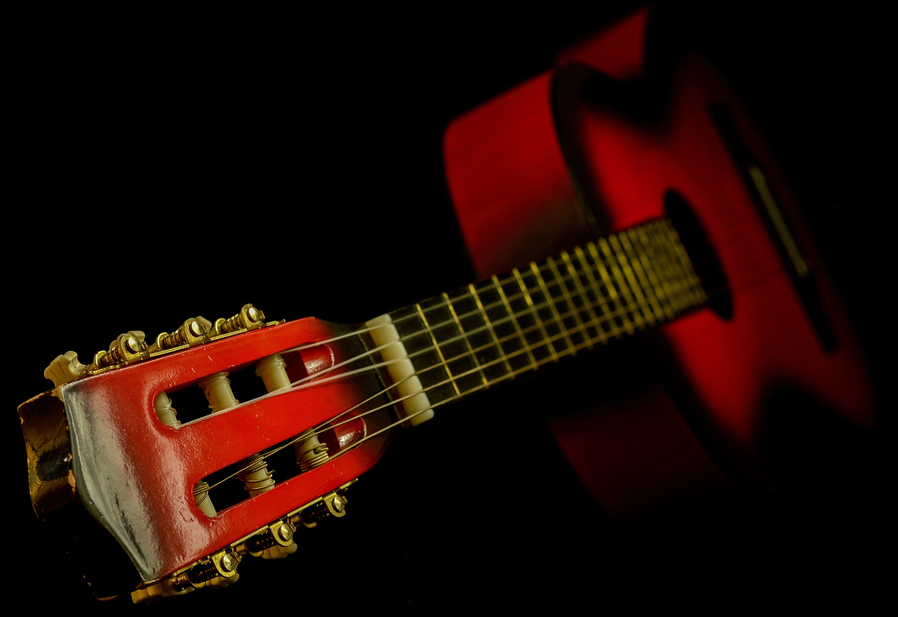
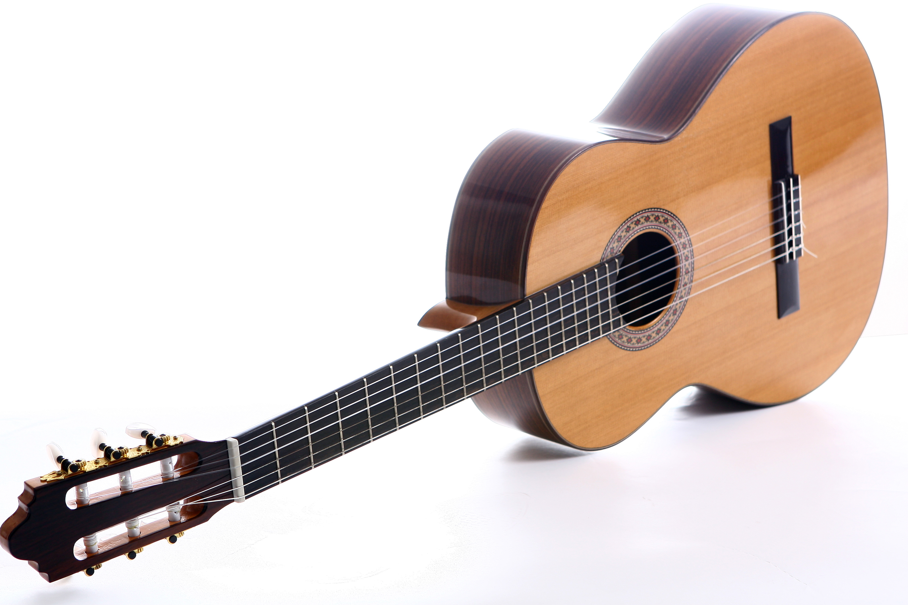

The classical guitar (also known as the nylon-string guitar or Spanish guitar) is a member of the guitar family used in classical music and other styles. An acoustic wooden string instrument with strings made of gut or nylon, it is a precursor of the modern steel-string acoustic and electric guitars, both of which use metal strings. Classical guitars derive from the Spanish vihuela and gittern of the fifteenth and sixteenth century. Those instruments evolved into the seventeenth and eighteenth-century baroque guitar—and by the mid-nineteenth century, early forms of the modern classical guitar.
a right-handed player, the traditional classical guitar has twelve frets clear of the body and is properly held up by the left leg, so that the hand that plucks or strums the strings does so near the back of the sound hole (this is called the classical position). However, the right-hand may move closer to the fretboard to achieve different tonal qualities. The player typically holds the left leg higher by the use of a foot rest. The modern steel string guitar, on the other hand, usually has fourteen frets clear of the body (see Dreadnought) and is commonly held with a strap around the neck and shoulder.
The phrase "classical guitar" may refer to either of two concepts other than the instrument itself:
The instrumental finger technique common to classical guitar—individual strings plucked with the fingernails or, less frequently, fingertips The instrument's classical music repertoire The term modern classical guitar sometimes distinguishes the classical guitar from older forms of guitar, which are in their broadest sense also called classical, or more specifically, early guitars. Examples of early guitars include the six-string early romantic guitar (c. 1790–1880), and the earlier baroque guitars with five courses.
The materials and the methods of classical guitar construction may vary, but the typical shape is either modern classical guitar or that historic classical guitar similar to the early romantic guitars of France and Italy. Classical guitar strings once made of gut are now made of materials such as nylon or fluoropolymers, typically with silver-plated copper fine wire wound about the acoustically lower (d-A-E in standard tuning) strings.
A guitar family tree may be identified. The flamenco guitar derives from the modern classical, but has differences in material, construction and sound. [1] [2] Today's modern classical guitar was established by the late designs of the 19th-century Spanish luthier, Antonio Torres Jurado.